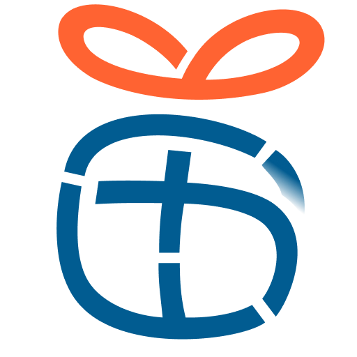
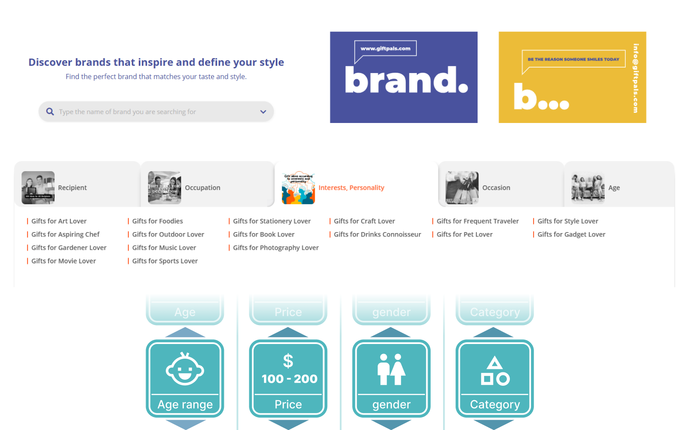
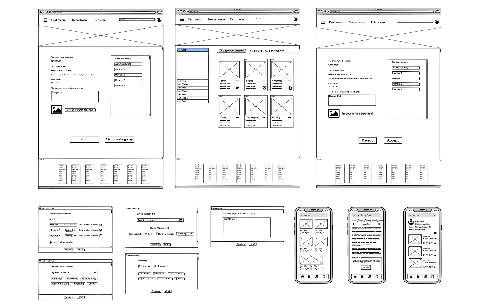
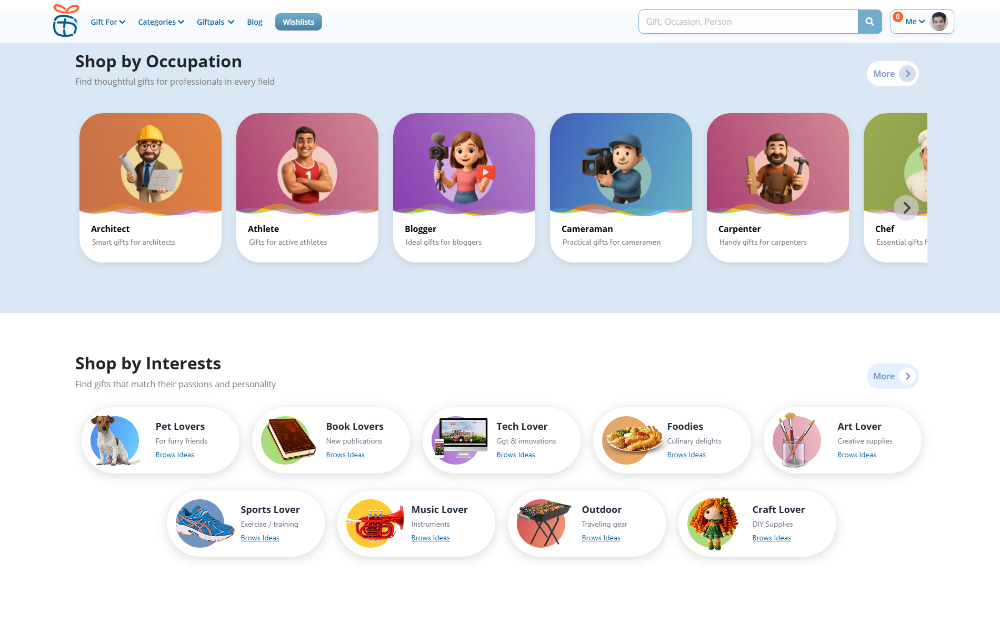

From a generic catalog to a gift finder that actually knows who it's shopping for

Giftpals launched on a strong market insight — people don't want to browse a catalog, they want a short, relevant list for a specific person and occasion — but the first version still behaved like a standard online store. I rebuilt discovery around the recipient instead of the product category, turning that insight into something the product actually delivered on.
A catalog that didn't know who the gift was for
Before I joined the team, the platform worked like a standard online store: products organized into generic categories, no different from any e-commerce catalog. That approach missed the actual problem — the user's struggle wasn't a lack of products, it was finding the right gift for a specific person among too many options.
- Users had little structured information about the person they were shopping for, and what information they did have wasn't used to narrow anything down.
- Search, filtering, and sorting ran on generic product categories instead of who the gift was actually for.
- The business model added a second constraint: the interface needed to support affiliate-driven monetization without feeling like an ad-stuffed catalog.
Borrowing mental models people already trust
Rather than inventing a new interaction pattern, I leaned on UX patterns users already understand from social platforms and retail, recognizable filtering, shareable lists, discovery feeds, so the "personalized gift finder" concept didn't need to be explained before it could be used.
I rebuilt search, filtering, and sorting around recipient-based parameters, age, gender, profession, personal interests, and budget, instead of generic product categories, so the first results a user saw were already close to a match. I built the user flows and workflow diagrams for discovery by recipient and by occasion, then presented progress and prototypes directly to the founder and stakeholders to keep design decisions aligned with the business goals driving the roadmap.

gift‑discovery user flow
workflow diagram / sitemapWhere the trade‑offs actually happened
Rebuilding search and filtering around who the gift was for, rather than what category the product belonged to, was the core fix, it addressed the actual source of user confusion instead of adding more filters on top of the wrong structure.
Combining engaging interface design with UX patterns common on social platforms, sharing, following, list-building, encouraged community-driven content and repeat visits, instead of a one-off transactional filter search.
Discovery that feels like browsing, not filtering
The final experience lets users discover and share gift ideas in a way that mirrors browsing a social feed more than querying a database, built around a set of features that turned one-off shopping into an ongoing platform:
- A built-in messenger and social layer, where users could share upcoming occasions, interests, and needs so friends could shop for them with actual context, not guesswork.
- Group gifting for occasions like Secret Santa, plus support for corporate gifting for company events.
- An occasion calendar with reminders, so users didn't miss—or duplicate—a gift for the same person.
- Followable brands and shareable gift lists, visible to friends with the user's approval.
- A full dashboard covering store performance, friend lists, income progress, and a user's own saved gift preferences.
- Search and filtering designed to feel closer to a fun scroll than a checkbox form, so narrowing down options didn't feel like work.
Every result still routes through the affiliate model funding the business.

final UI screens / prototype linkResults after the usability redesign
What I'd revisit
Leaning on social‑platform patterns made the concept easy to grasp fast, but it also means the discovery feed competes for the same attention span as the platforms it borrowed from, worth a longer‑term look at whether that's a strength or a ceiling on engagement.